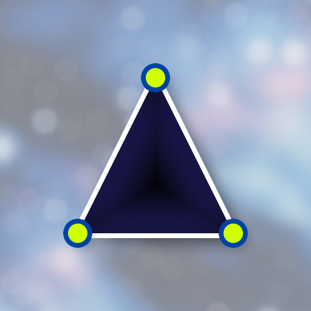
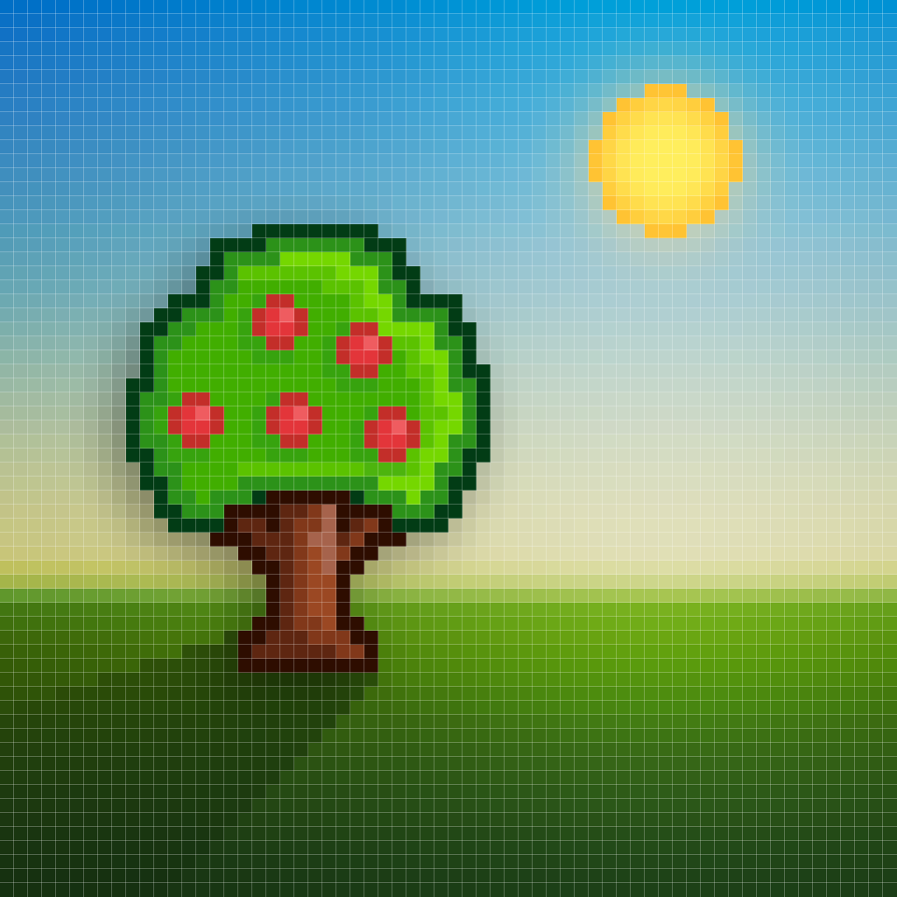

A shader is a set of instructions that runs on the GPU's massively parallel architecture. Originally named for "shading," shaders controlled variance of light and dark. Today they are the core building block of real-time graphics — responsible for every pixel on screen in a game or 3D application.
Shaders run on the GPU's massively parallel architecture. Where a CPU excels at complex, branching sequential tasks, the GPU is optimized for bulk-processing enormous quantities of data simultaneously via relatively simple operations.
This parallel architecture makes shaders ideal for:
The GPU pipeline flows through distinct programmable stages. Select a stage to explore it:
Operates on each vertex (point) in a mesh. A triangle has exactly 3 vertices — the simplest primitive with a surface area. Every polygon in a 3D scene is decomposed into triangles.
Operates on each pixel (or fragment) of a rendered surface. HLSL calls it a "pixel shader"; GLSL calls it a "fragment shader" — they refer to the same stage.
// Minimal GLSL — every pixel = solid red
void mainImage(out vec4 fragColor, in vec2 fragCoord) {
fragColor = vec4(1.0, 0.0, 0.0, 1.0);
}
Not part of the graphics pipeline — runs arbitrary parallel workloads on the GPU directly. Provides GPGPU capabilities without switching APIs.

A pixel is the minimum unit of color on a display — conceptually atomic. Each pixel stores a color value. In a color display, each pixel stores red, green, blue, and alpha channel values.
A zoomed view of letter rendering shows anti-aliasing: the sharp white/black boundary softens to gray intermediate pixels along diagonal edges, reducing the "staircase" artifact (aliasing) that occurs when continuous curves are sampled on a discrete pixel grid.
No matter how smooth a scene feels, the final output is still computed on a finite grid of pixels. The fragment shader's job is to compute each of those values independently and in parallel.

| Language | Full Name | Used With |
|---|---|---|
| GLSL | OpenGL Shading Language | OpenGL, WebGL, Vulkan |
| HLSL | High-Level Shading Language | DirectX (Microsoft), Unity |
| WGSL | WebGPU Shading Language | WebGPU (browser) |
| MSL | Metal Shading Language | Apple Metal |
GLSL and HLSL are both C-like. If you know either one, adapting to the other is straightforward. Prior C/C++ knowledge transfers directly; the main adjustment is learning to think in parallel spatial-visual terms rather than sequential imperative terms.
Consider thousands of projectiles in a game:
This generalizes to pixel shaders: computing the color of pixel (100, 200) doesn't depend on computing the color of pixel (101, 200). The entire framebuffer can be computed in parallel.
| Technique | Description |
|---|---|
| Lit surface shading | Phong/PBR model: diffuse + specular + ambient based on light direction and surface normal |
| Vertex displacement | Animate mesh vertices (water waves, cloth, terrain) via vertex shader |
| Normal mapping | Fake high-frequency surface detail with a normal map texture, no extra geometry |
| Depth blending | Water edge softness: fade opacity based on depth buffer comparison |
| Alpha blending | Transparent surfaces accumulate contributions from multiple overlapping layers |
| Procedural textures | Generate patterns mathematically (noise, gradients, fractals) rather than from textures |
| Post-processing | Full-screen quad + pixel shader for color grading, bloom, chromatic aberration, etc. |
Shader Graph (Unity) and Material Editor (Unreal) provide node-based visual shader authoring on top of HLSL, removing the need to write raw shading code for common effects.
Because GPUs are powerful parallel processors, their use expanded beyond graphics:
CUDA (NVIDIA) and OpenCL / SYCL are the primary GPGPU programming APIs. Compute shaders (in GLSL/HLSL) provide GPGPU capabilities within the graphics pipeline without switching APIs.